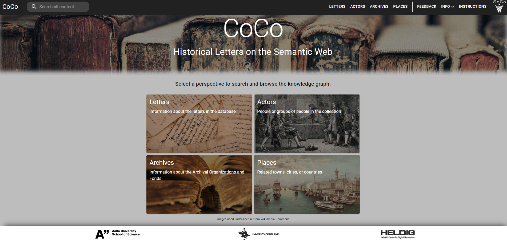

Learning to Read Digital? Constellations of Correspondence Project and Humanist Perspectives on the Aggregated 19th-century Finnish Letter Metadata
![]()
This paper discusses a digital humanities consortium project, Constellations of Correspondence - Large and Small Networks of Epistolary Exchange in the Grand Duchy of Finland (CoCo), which aggregates, analyses and publishes 19th-century epistolary metadata from the collections of Finnish cultural heritage organisations as an open semantic web portal. First, we will approach digital literacy from our own experience as humanists operating in a digital environment. We will share how we have learned to work in a hybrid team with computer scientists and have been able to create fluent ways of analysing the data and developing the portal together. Secondly, we will explore the user testing of the portal carried out in spring 2024. It showed that building a committed test group is challenging and that ‘traditional’ humanists have difficulties in studying mass data. However, the user feedback was encouraging, and guides us in developing the portal before its launch.
Semantic web portal, interdisciplinary collaboration, user testing survey
Introduction
This paper discusses data and practices related to an ongoing digital humanities consortium project Constellations of Correspondence – Large and Small Networks of Epistolary Exchange in the Grand Duchy of Finland (CoCo; Research Council of Finland, 2021–2025). The project aggregates, analyses and publishes 19th-century epistolary metadata from letter collections of Finnish cultural heritage (CH) organisations on a Linked Open Data service and as a semantic web portal (the ‘CoCo Portal’), and it consists of three research teams, bringing together computational and humanities expertise. We focus exclusively on metadata considering them to be part of the cultural heritage and a fruitful starting point for research, providing access i.e. to 19th-century epistolary culture and archival biases. The project started with a webropol survey addressed to over 100 CH organisations to get an overview of the preserved 19th-century letters and the Finnish public organisations willing to share their letter metadata with us. Currently the CoCo portal includes seven CH organisations and four online letter publications with the metadata of over 997.000 letters and with 95.000 actors (senders and recipients of letters).
The Data and the Portal
The CoCo Data Model is based on international standards, such as CIDOC CRM (Doerr 2003), Dublin Core, and ICA Records in Contexts to promote interoperability with other datasets. The model supports the modelling of the relevant properties of letter metadata (Letter, Actor, Place, and Time-Span, provenance i.e. MetadataRecord and archival/collection level information) from the source datasets. To represent actors in these different source datasets, we use an adaptation of the Open Archives Initiative Object Reuse and Exchange (OAI-ORE) proxy concept. The collected metadata are transformed into linked open data using an automated transformation pipeline (Drobac 2023), which consists of several steps. First, each received dataset is processed into an intermediate RDF format. Then the data are harmonised with the CoCo Data Model and enriched by linking the recognised actors and places to external resources, such as Wikidata, Finnish National Biographies, as well as the Finnish AcademySampo (Drobac 2023) and the BiographySampo (Tamper 2023). Finally, the transformation pipeline produces a harmonised dataset of correspondence metadata. The availability of the aggregated letter metadata in the linked open data format facilitates the use of the data for data exploration and answering humanities research questions by publishing the data in a semantic portal or by using SPARQL queries. The project’s semantic portal allows users to search, browse and analyse the letters, archives, actors, and places in the CoCo dataset. It is based on the Sampo model (Hyvönen 2022) and is implemented using the Sampo-UI programming framework (Ikkala 2022). The user interface works on a faceted search paradigm, which allows the user to search, e.g. for letters sent by a certain person, letters from a certain period or letters kept in a certain organisation. Data such as the sending places can be visualised on a map, and other visualisations include the yearly distributions of letters, top correspondents, and correspondence networks. The portal also offers some network analysis figures.
Constant Datawork in an Interdiscplinary Team
At this stage (mid 2024), the three consortium teams have been working together for three full years. Two of the teams (Aalto University and the University of Helsinki) have a computational profile and are responsible for data modelling and transformation and the development of the user interface (semantic portal), and the team based at the Finnish Literature Society maintains relations with the data providers (CH organisations), but also participates in the first stages of data processing, for example by manually harmonising finding aids in word format to prepare them for algorithmic processing, and by performing quality checks on automatically processed data. Members of all teams participate in research activities (conferences, seminars, etc.) in their fields, but we mostly publish co-authored papers, currently focusing on what we call ‘critical collection history’. The starting point for this interdisciplinary work was fortuitous, as the key members had years of experience in – to borrow a term from Jo Guldi (2023) – hybrid teamwork. Guldi prefers the word hybrid to the more common interdisciplinary because ‘it is more specific to the kind of aliveness, the ongoing exchange, that I have in mind as the basis for the genesis of a new field. … I can be interdisciplinary in solitude … But hybrid teams require ongoing support and thinking between people trained in and who identify as members of far-flung disciplines’. (Guldi 2023). Thinking together across disciplines requires a strong commitment to developing a common language and an atmosphere in which it is possible to express uncertainty and ask questions. Despite the previous experience, working with the specificities of archival metadata and transforming them into ‘big metadata’ has forced us to study and develop a new shared vocabulary that reflects the particular characteristics or ‘localities’ (Loukissas 2019) of this particular data in the context of Linked Open Data and the chosen Humanities’ questions. One of the realisations and lessons of the project is the importance of collection-level information (identifying the so-called records creators and the fonds, i.e. the archival collections). Data models developed in previous projects dealing with epistolary metadata (usually based on curated and published editions of letters) did not highlight these characteristics, and all the datasets we acquired from archives, libraries and museums conveyed this information in different ways. In order to understand and visualise this aspect of the data, we needed to combine a practical understanding of archival work, theoretical reflections from cultural heritage studies and critical archival theory, and domain expertise in cultural heritage data ontologies and models. Such hybrid thinking takes time, especially when the aim is both to create a new dataset and to understand and analyse it in order to answer historical research questions. About seven months into the project, we started to see aggregated data. It was also at this point that we realised that monthly project meetings were far from enough; we needed to develop systematic ways of looking at the data, and to do so together as often as possible. As a result, a series of events were developed to explore and discuss the data: First, data meetings, where we decided, for example, which parts of the various data collected from the CH organisations would be transformed into linked open data; second, SPARQL meetings, where we learned the query language and used it to interrogate the datasets (this proved to be a good way of detecting errors and anomalies either in the transformation process or in the original data); third, portal meetings, where we discuss the features and properties of the interface and, again, look for patterns in the data by looking at the visualisations; and fourth, the so-called ‘CoCothons’, annual two-day intensive workshops dedicated to data exploration, but with some research content as well. On a monthly basis, we spend a total of 1–2 working days together ‘at the data’. The funding mechanism – a three-part consortium project – makes it possible to work across different universities and research institutions to gain expertise that is not available in any one place. The downside, however, is that we are working in different organisations; this is not a fashionable digital humanities ‘LAB’. All three teams in the project work in the Helsinki metropolitan area, which makes face-to-face meetings possible, but even with the time and effort invested in team work and the digital tools for easy communication (Slack, Trello, etc.), we still find from time to time that the algorithmic premises used by the computational team do not stand up to historical scrutiny, or that the research assistants have misinterpreted instructions for manual data processing.
Portal Test Users and their Feedback
We realised early on that it was extremely important to gather user experience before actually launching the CoCo portal. So, in early February 2024, we opened the portal to a test group of 17 people for a period of 2.5 months. The group was assembled partly through an open call on social media and at some conferences, and partly by asking specific people to join. The volunteers were mostly academic humanities researchers and invited specialists from two museums with 19th-century letter collections. We provided the testers with background material on the portal and the CoCo data endpoint documentation, the organisations whose data was currently in the portal, with user instructions, and with some questions or tasks to help them get started. We asked five specific questions to which we wanted answers, but we welcomed all kinds of feedback. Building an engaged and motivated community of test users proved to be a challenge. The opening online session, where the project’s portal experts taught how to use it, received only four participants. However, they were active in asking questions and satisfied with the introduction. We also offered the possibility of a joint online closing session to discuss the experiences, but only two people registered, so we cancelled it. All this shows that once the initial excitement of joining the test group had worn off, it was difficult to reach the testers and very difficult to engage them in the test or create a group spirit. People got lost in their own research and daily work. In the end, however, after a reminder, we received feedback from eight testers, i.e. from half of the group. We are still waiting for feedback from the later test group of archivists in the Finnish Literary Society. The feedback can be divided into two groups: comments on errors in the data, mostly errors in the disambiguation of actors, and comments on the functionalities and performance of the portal. The latter was what we had hoped for. It is interesting to note that the testers, who work in CH organisations and are used to working with collection management systems and have even catalogued archival material themselves, commented more on the functionalities, while the researchers clearly focused on data errors. In our view, this shows how much hands-on experience with databases affects a humanist’s ability to study mass data material and turn into digital humanities. You have to change your mindset, as our own experience in the project has shown. We also noticed that working only with the metadata of letters was a barrier for some of the testers; in the wish list for the future development of the portal, digitised letters or their transliterations stood out. A positive result from the project’s point of view was that the testers found the portal easy to use, the user interface with its four perspectives clear and the data offered useful both for their own research and for information services in CH organisations. They were able to find unknown connections, relationships and people in the data. The metadata available seemed to respond well to their research questions and to encourage further research. The ability to do queries with places was particularly appreciated. The fact that we had to write ‘preliminary’ instructions and update the portal for the testers in advance stimulated internal discussion about the future development of the portal and how to create a smooth feedback system for data errors and functional problems. Ethical data work (Ahnert and Weingart 2020) requires us to be very open, precise and thorough in documenting what data we have received and how we have harmonised it, which organisations are included and how they are implemented in the portal. Some difficulties with functionalities, visualisations and data errors have either already been fixed or are in progress or at least under discussion for further action. The feedback has provided us with an insight into the difficulties that users, both ‘traditional’ humanists and members of the wider public, may encounter when using the portal, and some guidelines for us to help them learn to read digital. The feedback proves that we are on the right track towards our goal of creating a new research resource, a virtual archive that crosses organisational silos.
